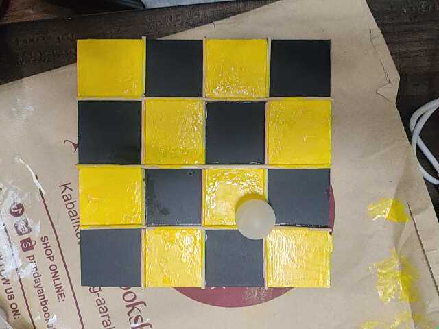
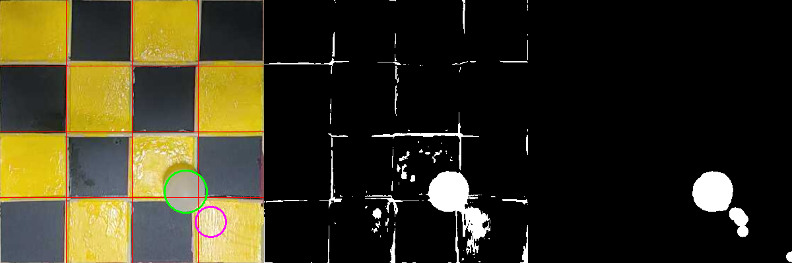
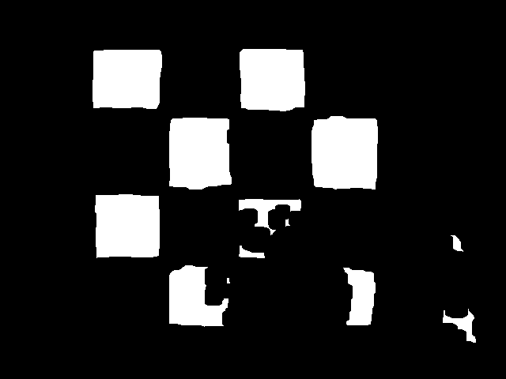
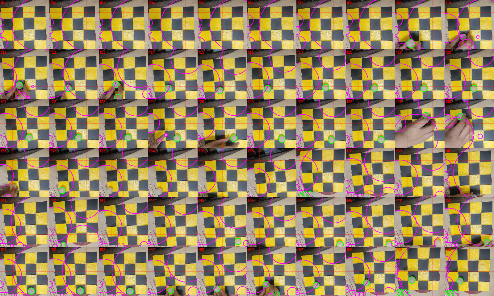
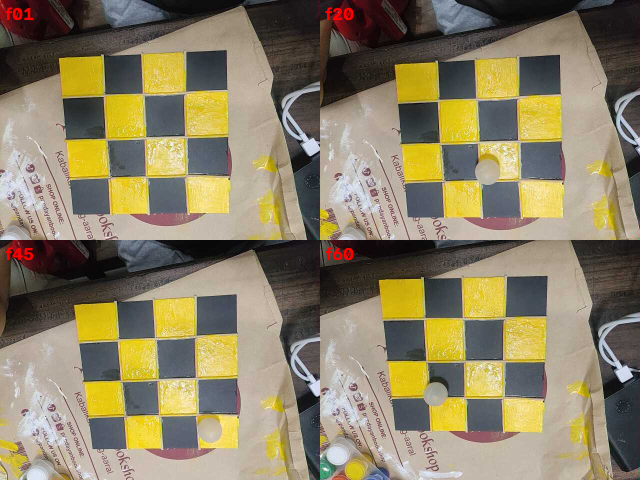

640×480 from IP Webcam, before any processing.

Left: board warped to a straight top-down 400×400 square, red 4×4 grid, green = ball, purple = rejected blob (shine). Middle: pale + bright pixels (ball, dividers, shine). Right: after removing thin things.

Shine on the bottom cells breaks them up, so automatic corner finding failed here.

Mostly wrong because the camera/board moved: green = ball found, purple = rejected blobs.

Frames 1, 20, 45 and 60: the board is in a different place and angle.
